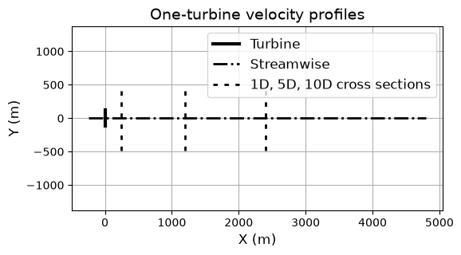
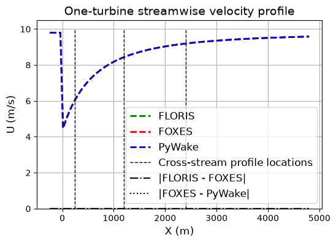
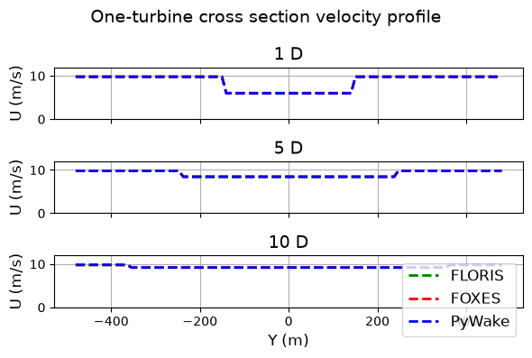

/opt/hostedtoolcache/Python/3.12.14/x64/lib/python3.12/site-packages/tqdm/auto.py:21: TqdmWarning: IProgress not found. Please update jupyter and ipywidgets. See https://ipywidgets.readthedocs.io/en/stable/user_install.html
from .autonotebook import tqdm as notebook_tqdm
Dashboard#
This page contains a series of cases that compare various aspects of the integrated wake modeling software including the mathematical wake models and other software-specific design decisions.
Wake model implementations#
The mathematical models included in each software are generally grouped into models describing the velocity of the wind in a wind turbine wake (velocity model) and models describing the magnitude of deflection of the wake (deflection model). The models available in each software are shown in the tables below.
Wake Model |
FLORIS |
FOXES |
PyWake |
|---|---|---|---|
Jensen 1983 |
• |
• |
• |
Larsen 2009 |
• |
||
Bastankhah / Porte Agel 2014 |
• |
• |
|
Bastankhah / Porte Agel 2016 |
• |
• |
|
Niayifar / Porté-Agel 2016 |
• |
||
IEA Task 37 Bastankhah 2018 |
• |
||
Carbajo Fuertes / Markfort / Porté-Agel 2018 |
• |
||
Blondel / Cathelain 2020 |
• |
||
Zong / Porté-Agel 2020 |
• |
||
Cumulative Curl 2022 |
• |
||
TurbOPark (Nygaard 2022) |
• |
• |
• |
Empirical Gauss 2023 |
• |
Wake Model |
FLORIS |
FOXES |
PyWake |
|---|---|---|---|
Jimenez 2010 |
• |
• |
|
Bastankhah / Porte Agel 2016 |
• |
• |
|
Larsen et al 2020 |
• |
||
Empirical Gauss 2023 |
• |
1-dimension wake profiles#
<matplotlib.legend.Legend at 0x7efee40f45c0>

Jensen#
Turbine 0, T0: xy=(0.00, 0.00), windio_turbine
Selecting 'DefaultEngine(n_procs=4, chunk_size_states=None, chunk_size_points=None)'
DefaultEngine: Selecting engine 'single'
SingleChunkEngine: Calculating 1 states for 1 turbines
SingleChunkEngine: Starting calculation using a single worker.
SingleChunkEngine: Completed all 1 chunks
DefaultEngine: Selecting engine 'single'
SingleChunkEngine: Calculating data at 100 points for 1 states
SingleChunkEngine: Starting calculation using a single worker.
SingleChunkEngine: Completed all 1 chunks
DefaultEngine: Selecting engine 'single'
SingleChunkEngine: Calculating data at 100 points for 1 states
SingleChunkEngine: Starting calculation using a single worker.
SingleChunkEngine: Completed all 1 chunks
DefaultEngine: Selecting engine 'single'
SingleChunkEngine: Calculating data at 100 points for 1 states
SingleChunkEngine: Starting calculation using a single worker.
SingleChunkEngine: Completed all 1 chunks
DefaultEngine: Selecting engine 'single'
SingleChunkEngine: Calculating data at 100 points for 1 states
SingleChunkEngine: Starting calculation using a single worker.
SingleChunkEngine: Completed all 1 chunks


Grid points
Dropdown content
Rotor velocity average
Dropdown content
Partial wake
Dropdown content
Spatial discretization and rotor average velocity#
Since the focus is specifically on analytical wake models, this class of software does not require a specific type of grid to model the wake. In practice, each software can choose a grid that meets its design and use objectives. However, the grid type has an impact on the results of the model through the computation of the thrust coefficient from a rotor-averaged velocity. The grid-types and methods for rotor averaging are compared here.
Point placement#
Show the locations in space and note that the points are used in combination with a velocity average method.
Rotor velocity average#
Develop a test case that demonstrates how the rotor-averaged velocity method performs. Ideally, this would be case that compares the methods outside the context of a wake model simulation, so something like average a function that analytically averages to 1.
Partial wake treatment#
Describe how the rotor average velocity is computed for a turbine where part of the rotor is waked.
Grid dependency#
plot of some quantity that's a function of the incoming wind (power, rotor average velocity...) as a function of grid resolution
Overlapping wakes#
The mathematical models included in each software are generally grouped into models describing the velocity of the wind in a wind turbine wake (velocity model) and models describing the magnitude of deflection of the wake (deflection model). The models available in each software are shown in the tables below.
Wind shear and veer#
Compare how the software model wind shear and wind veer
Software projects described#
---
title: Timeline of software releases
---
gantt
dateFormat YYYY-MM-DD
axisFormat %Y
todayMarker off
section FLORIS
0.1 :2018-01-16, 2019-05-07
1.0 :2019-05-07, 2020-04-27
2.0 :2020-04-27, 2020-06-23
2.1 :2020-06-23, 2020-09-25
2.2 :2020-09-25, 2021-05-01
2.3 :2021-05-01, 2021-10-02
2.4 :2021-10-02, 2022-02-25
2.5 :2022-02-25, 2022-03-01
3.0 :2022-03-01, 2022-04-06
3.1 :2022-04-06, 2022-09-16
3.2 :2022-09-16, 2023-03-07
3.3 :2023-03-07, 2023-05-16
3.4 :2023-05-16, 2023-10-26
3.5 :2023-10-26, 2024-03-15
3.6 :2024-04-05, 2024-04-09
4.0 :2024-04-09, 2024-06-01
section FOXES
0.1 (alpha) :2022-07-01, 2022-10-22
0.2 (alpha) :2022-10-22, 2023-01-27
0.3 (alpha) :2023-01-27, 2023-06-12
0.4 :2023-06-12, 2023-12-13
0.5 :2023-12-13, 2024-02-12
0.6 :2024-02-12, 2024-05-08
0.7 :2024-05-08, 2024-06-01
section PyWake
0.1 :2018-12-03, 2019-01-10
1.0 :2019-01-10, 2020-04-14
1.1 :2020-04-14, 2020-04-17
2.0 :2020-04-17, 2020-09-15
2.1 :2020-09-15, 2021-03-26
2.2 :2021-03-26, 2022-03-18
2.3 :2022-03-18, 2022-07-06
2.4 :2022-07-06, 2023-02-15
2.5 :2023-02-15, 2024-06-01
Fig. 1 Timeline of software releases#